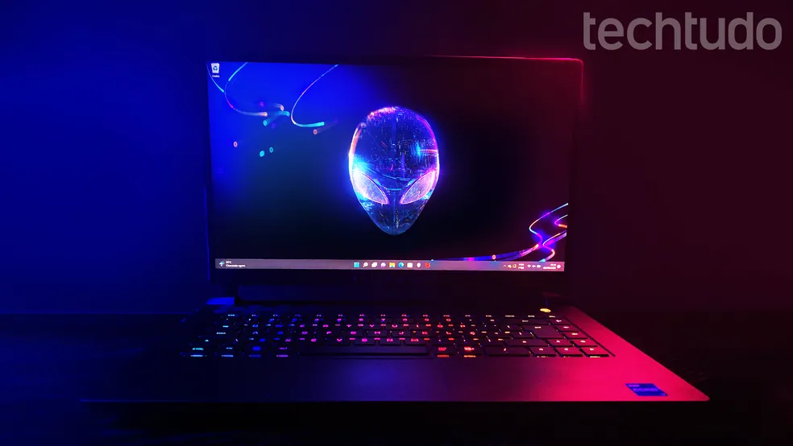

Sistema do MIT dessaliniza 5.000 litros de água por dia com energia solar
Engenheiros do MIT (Massachusetts Institute of Technology) passaram seis meses em Alamogordo, uma cidade do Novo México, nos EUA, conhecida por ser o local de teste da primeira bomba atômica em 1945. O objetivo era operar um sistema totalmente automatizado de dessalinização de águas subterrâneas salobras a partir de energia solar. O resultado foi uma produção de até 5.000 litros de água potável por dia, um volume suficiente para abastecer uma comunidade de 3.000 pessoas.
Ler mais

HyperOS 2.0: veja celulares Xiaomi que vão receber sistema com Android 15
HyperOS 2.0, novo sistema operacional da Xiaomi com baseado no Android 15, já está sendo liberado para os celulares compatíveis e traz diversas novidades. A atualização tem uma interface visual mais moderna, além de melhorias técnicas, como maior velocidade na transferência de dados e otimização no consumo de energia. O sistema já foi lançado em outros países e está sendo implementado em etapas. Em novembro, os modelos top de linha receberam a atualização, enquanto os demais dispositivos serão contemplados em dezembro. No Brasil, a fabricante chinesa ainda não divulgou uma data oficial para a chegada do software.
Ler mais

5 notebooks gamer para investir antes de 2025 e não se arrepender
Investir em um notebook gamer pode ser uma ótima alternativa para ter acesso a mais jogos, uma vez que tanto jogos de Xbox quanto de Playstation chegam aos PCs, além de ter acesso a mais opções de lojas como Steam, Epic Games e outras. No mercado brasileiro, marcas como Acer, Asus, Dell e Lenovo oferecem soluções de laptops por valores mais baixos que podem atender desde quem busca um equipamento para jogos mais leves, tendo até soluções que por pouco mais robustas, que prometem ser capazes de executar até os principais lançamentos com altas taxas de quadros.
Ler mais